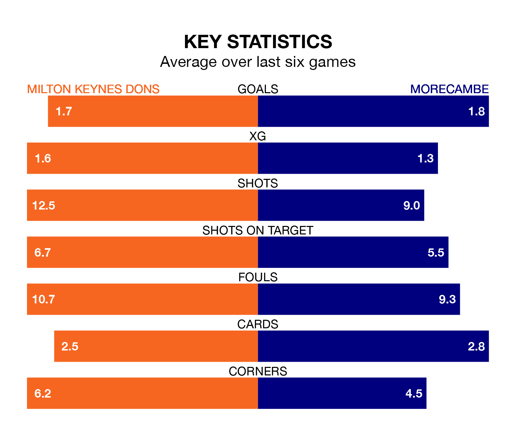

Milton Keynes Dons are heavy favourites to keep all three points at home in Saturday's kick-off against Morecambe.
The Dons, who sit seventh in EFL League Two with 25 games played, are priced at 1.6 to seal victory at Stadium mk.
Sitting eight places and eight points behind them in the table, Morecambe are 5.0 to win with *Betting Company*, while the draw is at 4.0.
In the last 10 years, Milton Keynes and Morecambe have played each other on eight occasions. Milton Keynes won seven of them and Morecambe one.
On average, the Dons scored 2.5 goals and the Shrimps 0.6 in those matches.
Their last meeting was on December 23, when Milton Keynes won 3-1 away.
With 41 goals in 25 games so far this season, Milton Keynes are scoring more than average in the league with 1.6 goals per game. And they are conceding fewer than average, letting in 32 goals at a rate of 1.3 per game.
Morecambe, meanwhile, are average scorers, with 1.5 goals per game. They have conceded 1.7 goals per game.
Dons are in fantastic form in EFL League Two, with five wins and one loss from their last six games.
With a win and three draws over that period, the Shrimps's form is much worse – they have taken six points from 18, compared to the Dons' 15.
In Michael Mellon, the visitors have one of the league's most on-form strikers so far this season. He has notched 13 goals in 22 appearances, to sit eighth in the scoring charts.
His goal rate of one every 134 minutes is quicker than that of Max Dean, the home side's top scorer with a goal every 159 minutes, and a total of eight goals in 19 games.
Milton Keynes's last match was on January 13, a 2-1 win against Tranmere Rovers, with Alex Gilbey and Ellis Harrison getting the goals for the Dons.
Morecambe drew 1-1 with Mansfield Town last time out, also on January 13, with Charlie Brown on the scoresheet.
Updated: 10:02 (UTC), 19/01/24